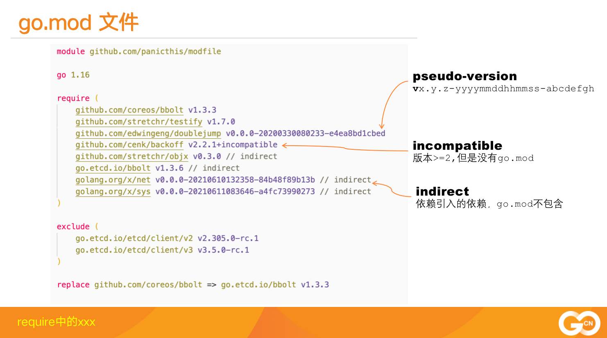

昨天在GopherChina 2021大会上分享了《深入Go Module》，干货太多了，接下来的分几篇文章详细介绍下。
现在哪个新编程语言不都是提供库版本工具呢？Java、Python、nonjs、rust都有一套自己的库管理方法和库注册中心，不管它们的叫法如何。Go最初推出来的时候并没有一个库管理方式，而是采用GOPATH的方式，所有的项目都必须放在GOPATH下，不止一次有从其它语言比如Java转过过来的同学问我:"为什么我在我的一个文件夹下建的项目没法编译呢？",那是因为他的文件夹没有建在GOPATH下，而等他想在GOPATH下建项目的时候，package path他又不知道该怎么写。
所以GO使用的GOPATH方式确实对新手来说是一件非常令人困惑的事。而随着Go生态圈的快速壮大，另一个经典的库管理的问题也出现了。就是我们项目中的依赖库经常出现API broken的情况，因为依赖的库相关接口改变了，导致我们的项目更新了依赖库后编译不过，我们不得不需要修改自己的代码以便适应依赖库的最新版本。更困难的是，如果多个依赖库分别依赖第三个依赖库的第三个版本，版本冲突就出现了。
依赖库冲突几乎每个编程语言都有这样的问题，甚至操作系统也有DLL地狱问题,所以各种编程语言都尝试使用自己的方式解决依赖库版本的问题。
前面说了，Go最初是没有官方的库版本的方式的，都是靠第三方的工具实现，比如godep、glide、dep等,从2012年各种工具分别出现，大海淘沙，浮浮沉沉，最后也就有几个常用的工具大家在使用，dep是2017出现的一个版本，让人眼前一亮，而且也得到了Go官方的支持，项目也放在Golang组织之下golang/dep。
但是蜜月期没有多久，2018年Russ Cox经过深思熟虑以及一些早期的试验，决定go库版本的方式需要从头再来，深度集成go的各种工具(go get、go list等)，实现精巧的最小化版本选择算法，解决broken API共存等问题，所以dep就被废弃了，这件事还导致dep的作者相当的失望和数次争辩。
但是不管怎样，Go官方的库管理方式还是在2018年go 1.11中实验性的推出了，通过设置一个环境变量GO111MODULE=on就可以弃用，并且期望go 1.12正式退出，而环境变量GO111MODULE=on就可以去掉了。可是没有想到的是，go module推出后问题多多，现在每一个go的版本中都有对go module修改，导致这个特性一直没有最终完成，这也是我吐槽它的地方：都快三年了，一个feature都开发那么久，而且未来的go 1.17、go 1.18还有一些改变，同学们，还学的动吗？
go官方库管理方式叫做go module。 先前，我们的库都是以package来组织的，package以一个文件或者多个文件实现单一的功能，一个项目包含一个package或者多个package。Go module就是一组统一打版和发布的package的集合，在根文件下有go.mod文件定义module path和依赖库的版本，package以子文件夹的形式存在module中，对package path就是 module path +"/"+ package name的形式。
一般我们项目都是单module的形式，项目主文件夹下包含go.mod,子文件夹定义package，或者主文件夹也是一个package。但是一个项目也可以包含多个module,只不过这种方式不常用而已。
go.mod
go module最重要的是go.mod文件的定义，它用来标记一个module和它的依赖库以及依赖库的版本。会放在module的主文件夹下，一般以go.mod命名。
一个go.mod内容类似下面的格式:
|
|
虽然是一个简单的文件，但是里面的乾坤不少，让我们依次介绍它们。
语义化版本 2.0.0
Go module遵循语义化版本规范 2.0.0。语义化版本规范 2.0.0规定了版本号的格式，每个字段的意义以及版本号比较的规则等等。

如果你想为你的项目发版，你可以设置tag为上面的格式，比如v1.3.0、v2.0.0-rc.1等等。metadata中在Go版本比较时是不参与运算的，只是一个辅助信息。
module path
go.mod的第一行是module path, 一般采用仓库+module name的方式定义。这样我们获取一个module的时候，就可以到它的仓库中去查询，或者让go proxy到仓库中去查询。
|
|
如果你的版本已经大于等于2.0.0，按照Go的规范，你应该加上major的后缀，module path改成下面的方式:
|
|
|
|
而且引用代码的时候，也要加上v2、v3、vx后缀，以便和其它major版本进行区分。
这是一个很奇怪的约定，带来的好处是你一个项目中可以使用依赖库的不同的major版本，它们可以共存。
go directive
第二行是go directive。格式是 go 1.xx,它并不是指你当前使用的Go版本，而是指名你的代码所需要的Go的最低版本。
|
|
因为Go的标准库也有所变化，一些新的API也被增加进来，如果你的代码用到了这些新的API,你可能需要指名它依赖的go版本。
这一行不是必须的，你可以不写。
require
require段中列出了项目所需要的各个依赖库以及它们的版本，除了正规的v1.3.0这样的版本外，还有一些奇奇怪怪的版本和注释，那么它们又是什么意思呢？
正式的版本号我们就不需要介绍了，大家都懂:
|
|
伪版本号

|
|
上面这个库中的版本号就是一个伪版本号v0.0.0-20200330080233-e4ea8bd1cbed,这是go module为它生成的一个类似符合语义化版本2.0.0版本，实际这个库并没有发布这个版本。
正式因为这个依赖库没有发布版本，而go module需要指定这个库的一个确定的版本，所以才创建的这样一个伪版本号。
go module的目的就是在go.mod中标记出这个项目所有的依赖以及它们确定的某个版本。
这里的20200330080233是这次提交的时间，格式是yyyyMMddhhmmss, 而e4ea8bd1cbed就是这个版本的commit id,通过这个字段，就可以确定这个库的特定的版本。
而前面的v0.0.0可能有多种生成方式，主要看你这个commit的base version:
- vX.0.0-yyyymmddhhmmss-abcdefabcdef: 如果没有base version,那么就是vX.0.0的形式
- vX.Y.Z-pre.0.yyyymmddhhmmss-abcdefabcdef： 如果base version是一个预发布的版本，比如vX.Y.Z-pre,那么它就用vX.Y.Z-pre.0的形式
- vX.Y.(Z+1)-0.yyyymmddhhmmss-abcdefabcdef: 如果base version是一个正式发布的版本，那么它就patch号加1，如vX.Y.(Z+1)-0
indirect注释
|
|
有些库后面加了indirect后缀，这又是什么意思的。
如果用一句话总结，间接的使用了这个库，但是又没有被列到某个go.mod中，当然这句话也不算太准确，更精确的说法是下面的情况之一就会对这个库加indirect后缀：
- 当前项目依赖A,但是A的go.mod遗漏了B, 那么就会在当前项目的go.mod中补充B, 加indirect注释
- 当前项目依赖A,但是A没有go.mod,同样就会在当前项目的go.mod中补充B, 加indirect注释
- 当前项目依赖A,A又依赖B,当对A降级的时候，降级的A不再依赖B,这个时候B就标记indirect注释
incompatible
有些库后面加了incompatible后缀，但是你如果看这些项目，它们只是发布了v2.2.1的tag,并没有+incompatible后缀。
|
|
这些库采用了go.mod的管理，但是不幸的是，虽然这些库的版major版本已经大于等于2了，但是他们的module path中依然没有添加v2、v3这样的后缀。
所以go module把它们标记为incompatible的，虽然可以引用，但是实际它们是不符合规范的。
exclude
如果你想在你的项目中跳过某个依赖库的某个版本，你就可以使用这个段。
|
|
这样，Go在版本选择的时候，就会主动跳过这些版本，比如你使用go get -u ......或者go get github.com/xxx/xxx@latest等命令时，会执行version query的动作，这些版本不在考虑的范围之内。
replace
replace也是常用的一个手段，用来解决一些错误的依赖库的引用或者调试依赖库。
|
|
比如etcd v3.3.x的版本中错误的使用了github.com/coreos/bbolt作为bbolt的module path,其实这个库在它自己的go.mod中声明的module path是go.etcd.io/bbolt，又比如etcd使用的grpc版本有问题，你也可以通过replace替换成所需的grpc版本。
甚至你觉得某个依赖库有问题，自己fork到本地做修改，想调试一下，你也可以替换成本地的文件夹。
replace可以替换某个库的所有版本到另一个库的特定版本，也可以替换某个库的特定版本到另一个库的特定版本。
retract
retract是go 1.16中新增加的内容，借用学术界期刊撤稿的术语，宣布撤回库的某个版本。
如果你误发布了某个版本，或者事后发现某个版本不成熟，那么你可以推一个新的版本，在新的版本中，声明前面的某个版本被撤回，提示大家都不要用了。
撤回的版本tag依然还存在，go proxy也存在这个版本，所以你如果强制使用，还是可以使用的，否则这些版本就会被跳过。
和exclude的区别是retract是这个库的owner定义的， 而exclude是库的使用者在自己的go.mod中定义的。